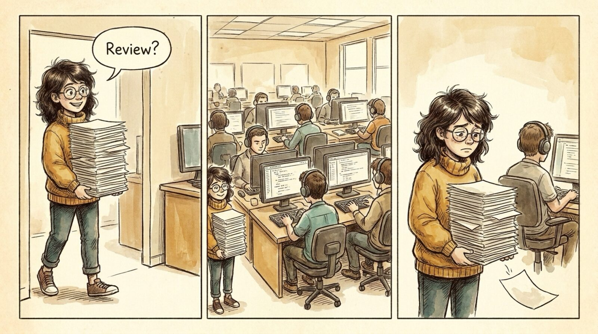

<section id="w02" data-transition="fade" style="background:#F5EEE0;color:#222222;font-family:Arial, Helvetica, sans-serif;padding:0;display:flex;flex-direction:column">

<aside>Wrong #1: most software is internal, or the change is minor. Nobody cares about most changes, so going through ANY engineering review is too much.</aside>
</section>
